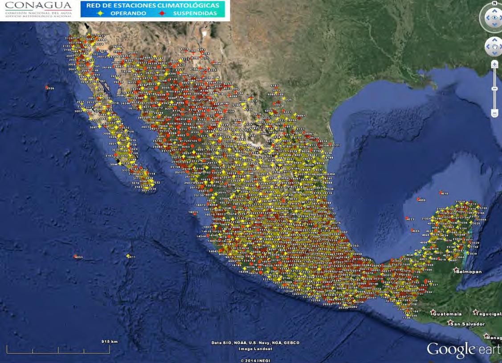

Manuales e Indices Meteorologicos

Contenido

Manual de Usuario de Estaciones Climatologicas
Las estaciones climatológicas son instalaciones donde se miden y registran de forma continua las condiciones de la atmósfera para estudiar el clima a largo plazo. Son fundamentales en la meteorología y la climatología.
informacionManual Meteorologo Previsor
El Mapa Análisis de Superficie es un elemento esencial del Servicio Meteorológico Aeronáutico de SENEAM, en este capítulo de citan las características, objetivo e importancia de este mapa y se presentan las consideraciones y normas operacionales para su elaboración.
informacionMasas de Aire y Frentes
Cuando el aire posee propiedades similares en una gran extensión se le llama masa de aire. En cada nivel, la temperatura y la humedad tienen, aproximadamente, los mismos valores sobre grandes distancias horizontales
informacionTermodinamica del Aire humedo
La termodinámica del aire húmedo es la parte de la termodinámica que estudia cómo se comporta el aire cuando contiene vapor de agua. Es clave en meteorología porque explica fenómenos como nubes, lluvia, niebla y tormentas.
informacionTermodinamica del Aire seco
La termodinámica del aire seco es la parte de la termodinámica aplicada a la atmósfera cuando no se considera vapor de agua. Es una simplificación muy útil en meteorología para entender cómo cambian la temperatura, presión y volumen del aire.
informacion